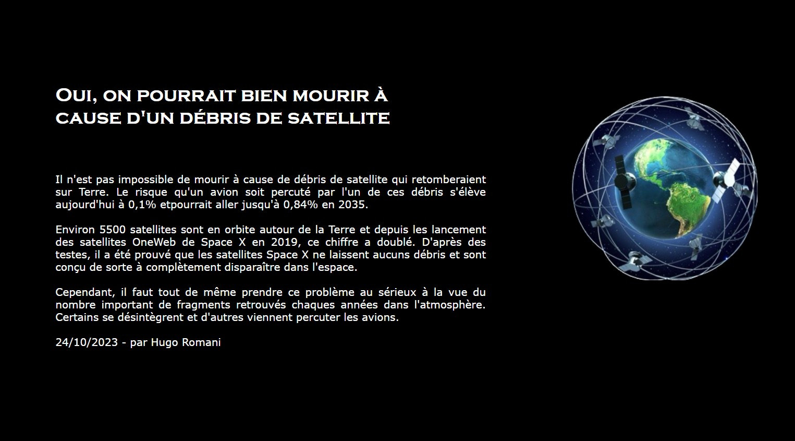

Veille Technologique
Dates : Octobre 2023 à Janvier 2025


Déroulement du projet
Tout au long de mon BTS, à l'aide de recherches internet et de Google Alerte, j'ai répértorié des informations sur les sattélites, tiré d'articles publiés en ligne.
Le thème que j'ai choisi fait en référence à mon prénom.
J'ai pu présenter le site sur lequel j'ai répertorié mes recherches à mes professeurs ainsi qu'à mes camarades de classe afin de recevoir des critiques constructives sur ma veille.